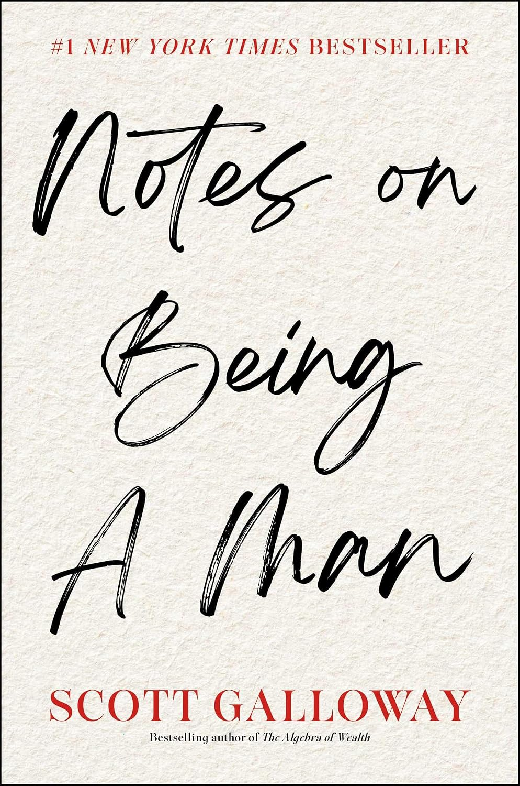
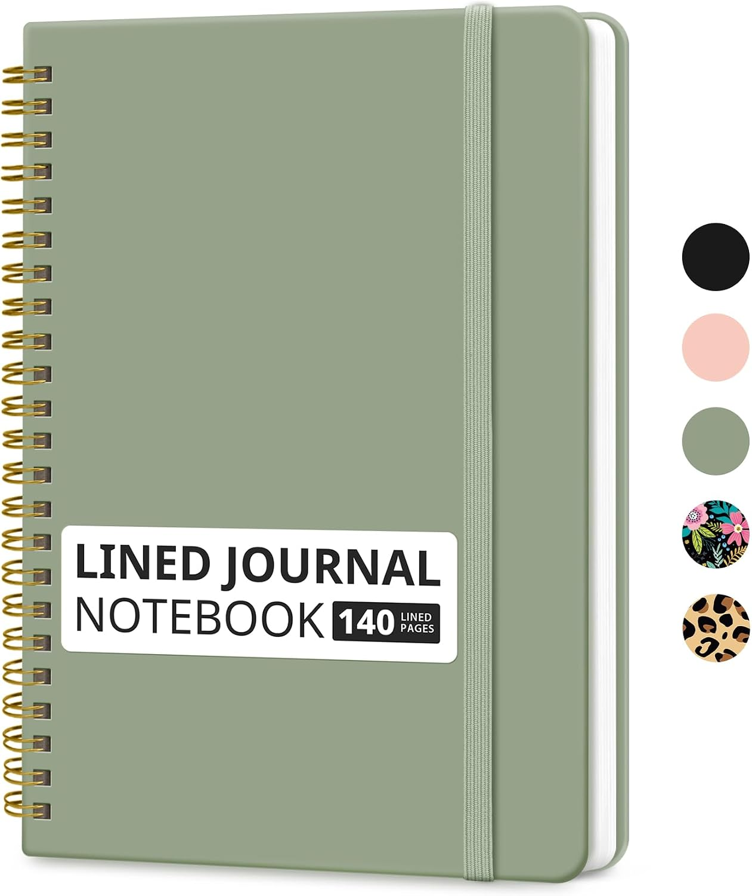
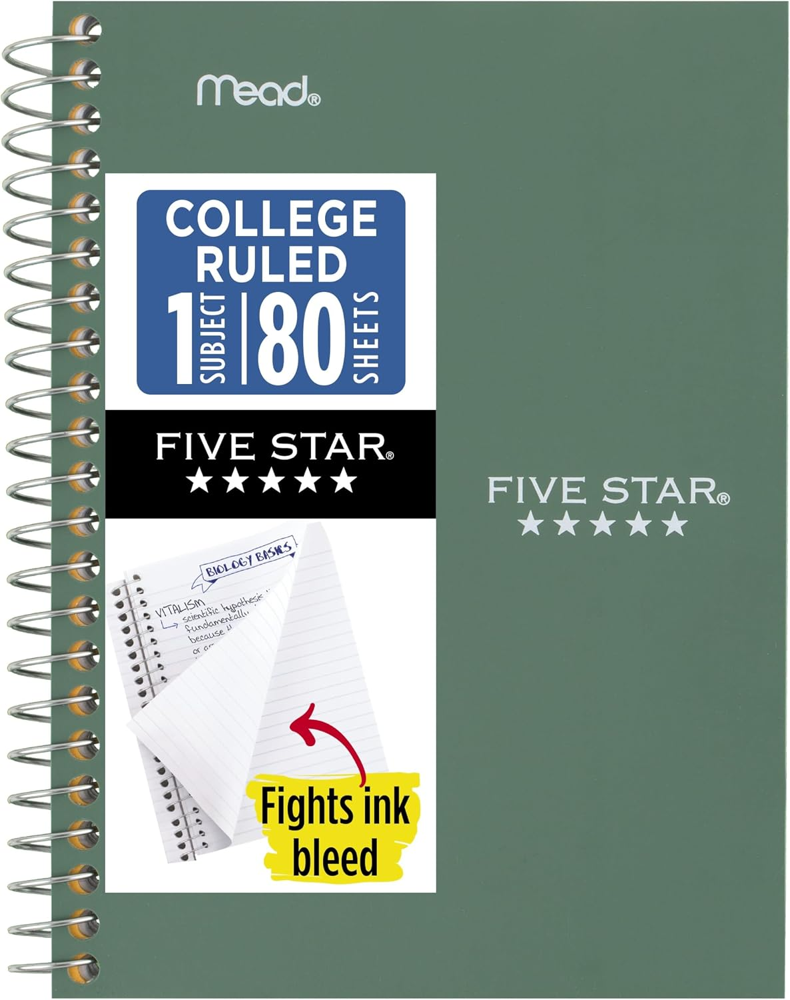
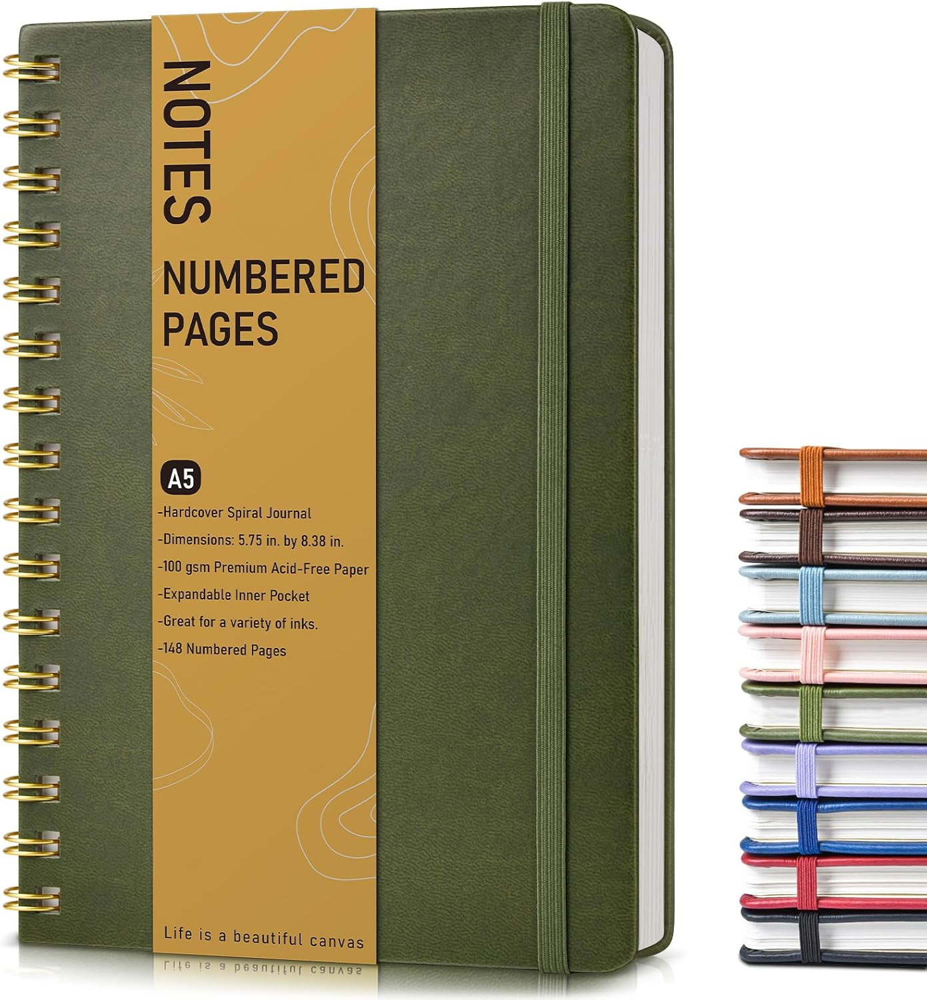

✓
PRODUCTIVITYYOUR FOCUS TODAY
Build with intention ↗
Review the next step ○
01 — YOUR PERSONAL WORKSPACE
Focus OS
Notes, Matrix, expenses and goals in one calm workspace. Designed to keep your data local-first and your day under your control.
TOOLS FOR A MORE INTENTIONAL DAY
Vortex brings my practical planning apps together with a few carefully chosen things for life away from the screen — notebooks to capture your thoughts and lighting to help you settle into the day.
THE DIGITAL TOOLKIT 01 / 03
Start with the digital workspace. Use the same straightforward approach to plan your day, keep notes, track expenses, and stay aware of your goals.
01 — YOUR PERSONAL WORKSPACE
Notes, Matrix, expenses and goals in one calm workspace. Designed to keep your data local-first and your day under your control.
02 — ANOTHER WAY INTO YOUR WORKSPACE
A companion entry point to the same practical organizing approach — not just for money. Keep everyday plans, notes, and priorities clearer without adding complexity.
Technology should give you more ownership of your time — not another place to lose it.
THE VORTEX PRINCIPLEWHEN YOU WANT TO WRITE BY HAND 02 / 04
The apps help you organize on screen. A paper notebook gives you somewhere to think without notifications, save a passing idea, or work through your next step.

READ & REFLECTBOOK · PERSPECTIVE
Scott Galloway's candid look at purpose, resilience, relationships, and modern masculinity.
View on Amazon ↗
DAILY NOTESNOTEBOOK · WORK & LIFE
A sturdy, lay-flat notebook for daily notes, planning, journaling, and ideas on the go.
View on Amazon ↗
TAKE IT WITH YOUNOTEBOOK · POCKET-SIZED
A small, durable notebook for quick thoughts, lists, and reminders away from your desk.
View on Amazon ↗
DEEP WORKJOURNAL · ORGANIZE
Numbered pages, a contents section, and a clean layout for longer-running projects and reflections.
View on Amazon ↗Affiliate disclosure: As an Amazon Associate, I may earn from qualifying purchases. It doesn't change the price you pay. Product availability and prices can change; check Amazon for current details.
LumaSpace is the dedicated home for the lamp collection — lighting ideas chosen to make a desk, reading corner, or quiet morning feel more inviting.
LIGHTING FOR YOUR MORNING THOUGHTS
LumaSpace is Vortex’s lamp collection — a separate destination for exploring lighting that suits a workspace, a reading nook, or the first quiet moments of the morning.
Explore LumaSpace lighting ↗A MOMENT TO RESET 03 / 04
“Commit your work to the Lord, and your plans will be established.”
PROVERBS 16:3 · WORLD ENGLISH BIBLE
A small pause. A fresh perspective.
BEYOND THE SCREEN
Follow the person behind the projects, browse the code, and visit each project in its own home.